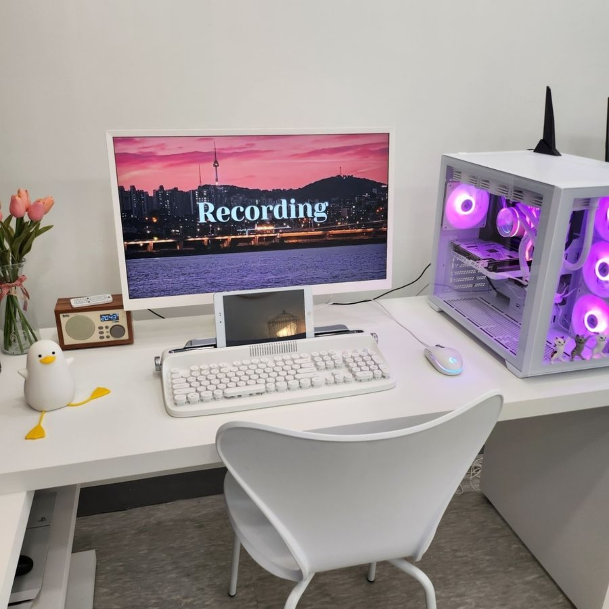

컴퓨터 수리
부팅불량, 속도저하, 오류해결
고양시 전지역 출장 수리! 가정·사무실·매장 어디든
전문가가 직접 방문하여 신속하고 정확하게 해결해드립니다.

고양시 전지역 빠른 방문
(화정, 일산, 은평구 포함)
불필요한 수리 없이
정확한 진단으로 투명한 비용
궁금한 점은 언제든지
편하게 문의하세요
다양한 기종과 문제 해결로
믿을 수 있는 기술력
수리부터 업그레이드·조립PC·프로그램 설치·컴퓨터 판매까지 상담합니다.
전원 불량, 부팅 문제, 화면 문제, 갑작스러운 오류, 느려진 컴퓨터 등 다양한 증상을 점검합니다.
노트북 내부 점검과 저장장치·메모리 업그레이드, 속도 저하 및 각종 고장 증상을 상담합니다.
사무용·게임용·작업용 등 사용 목적과 예산에 맞춰 부품 구성과 업그레이드를 안내합니다.
윈도우, 한글, 오피스 등 PC 사용에 필요한 프로그램 설치와 기본 설정을 상담합니다.
조립PC, 노트북 판매와 주변기기 구매 상담을 사용 목적에 맞춰 안내합니다.
고양시와 인근 지역에서 방문이 필요한 컴퓨터 문제를 현장에서 확인하고 상담합니다.
컴퓨터 수리, 노트북 수리, 조립PC 관련 실제 사진을 확인하실 수 있습니다.

노트북 내부 상태와 부품을 점검하고 필요한 수리를 상담합니다.

사용 목적과 예산에 맞춘 부품 구성과 조립PC 제작 사례입니다.

게임·그래픽·영상 작업 등에 맞는 PC 구성을 상담합니다.
상담부터 진단, 작업 안내까지 순서대로 진행합니다.
컴퓨터 또는 노트북의 증상과 사용 환경을 확인합니다.
필요한 경우 출장하여 하드웨어와 소프트웨어 상태를 점검합니다.
필요한 작업과 비용을 안내하고 진행 여부를 상담합니다.
작업 후 정상 작동 여부를 확인하고 사용 방법을 안내합니다.
삼송·지축·원흥·원당을 중심으로 덕양구와 일산, 은평구 인근에서 컴퓨터 수리와 PC 상담을 진행합니다.
삼송, 지축, 원흥, 원당, 화정, 행신, 능곡, 성사동, 주교동, 고양동, 관산동 등 고양 지역 출장 상담.
일산동구·일산서구 인근에서 컴퓨터수리, 노트북수리, 조립PC와 업그레이드 상담.
고양시와 가까운 서울 은평구 인근 지역 출장 컴퓨터수리 및 PC 상담.
매장 방문도 가능합니다. 컴퓨터 수리·노트북 수리·조립PC 상담을 매장에서 직접 받아보실 수 있습니다.
경기도 고양시 덕양구 삼송로 222
현대헤리엇 상가 154호
매장 방문도 가능합니다.
컴퓨터 수리, 노트북 수리, 조립PC 및 업그레이드 상담을 매장에서 직접 안내해드립니다.
증상을 말씀해주시면 상담부터 도와드리겠습니다.